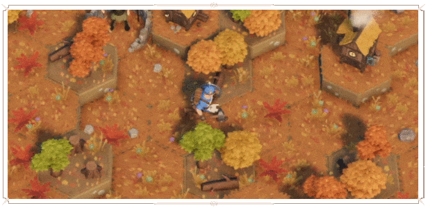
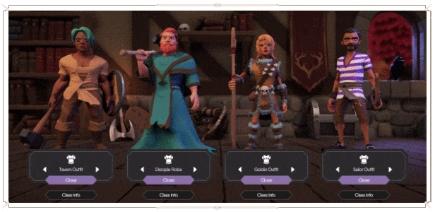
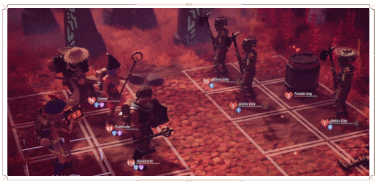

Inspirado nas aventuras de RPG de mesa
For The King II é fácil para qualquer pessoa aprender e jogar, mas o jogo requer habilidade, paciência e excelência estratégica para ser dominado. Com o mapa criado por geração procedural, as jogadas são infinitas, mas nunca iguais umas às outras. Movimentos, embates e mecânicas de combate inspirados no lançamento de dados únicos, mas familiares, adicionam ainda mais espontaneidade e variedade à medida que a sua sorte aumenta e diminui ao lançar os dados.

Reúna seu poder
Crie sua equipe com 12 classes de personagens exclusivas, cada uma com suas próprias vantagens, pontos fortes e estilos de jogo. Do Ferreiro mais forte e ferrenho ao Alquimista mais astuto com ardilosas poções, você escolhe quais personagens enfrentarão a temível Guarda da Rainha e as estratégias de combate que garantirão o sucesso. Adicione novos personagens à sua equipe com mercenários e companheiros que permitem que você capture feras selvagens da floresta e recrute mercenários implacáveis em tavernas locais (por um preço, é claro) para reforços em tempos difíceis.

Combate em turnos evoluidos
Inspirado nos clássicos combates em turnos, For The King II adiciona uma profundidade estratégica à adorada mecânica com o novo Battle Grid, onde o movimento e a posição fornecem bônus e penalidades estratégicas a você e aos seus inimigos. Defenda a fileira ao fundo equipando um poderoso Escudo da Torre, empurre os inimigos para poças letais de fogo abrasador ou enfrente tropas corpo a corpo com magia negra lançada por armas saqueadas de inimigos derrotados. A escolha é sua!